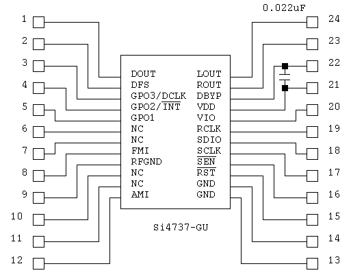
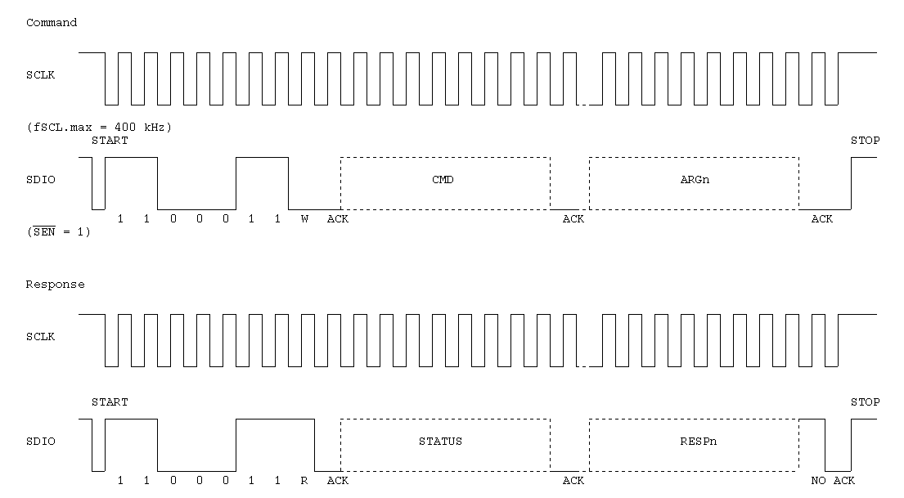

The Si4737 is a digital AM/FM radio receiver IC. It has a digital audio output and an I2C interface (2-wire control interface).



| Cmd | Name | Cmd | Name | |
|---|---|---|---|---|
| 0x01 | POWER_UP | 0x20 | FM_TUNE_FREQ | |
| 0x10 | GET_REV | 0x21 | FM_SEEK_START | |
| 0x11 | POWER_DOWN | 0x22 | FM_TUNE_STATUS | |
| 0x12 | SET_PROPERTY | 0x23 | FM_RSQ_STATUS | |
| 0x13 | GET_PROPERTY | 0x24 | FM_RDS_STATUS | |
| 0x14 | GET_INT_STATUS | 0x27 | FM_AGC_STATUS | |
| 0x15 | PATCH_ARGS | 0x28 | FM_AGC_OVERRIDE | |
| 0x16 | PATCH_DATA | 0x80 | GPIO_CTL | |
| 0x81 | GPIO_SET |